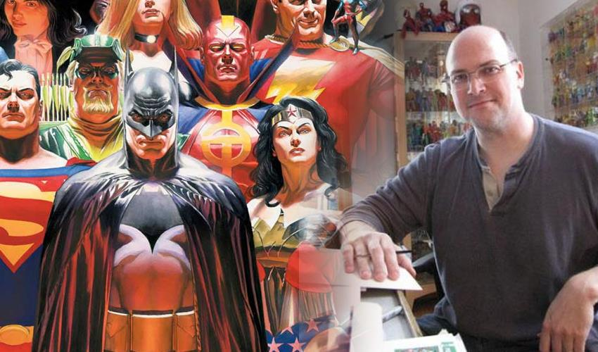
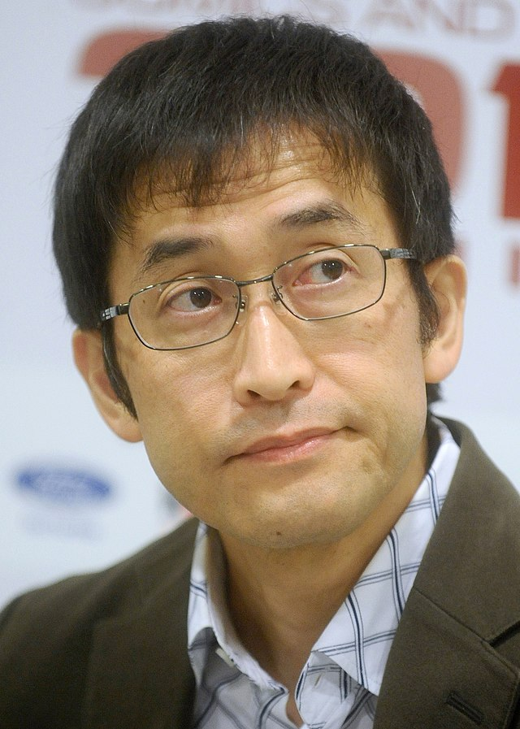
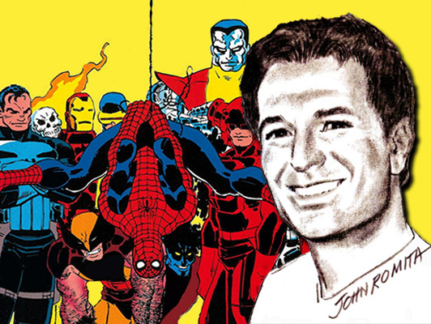
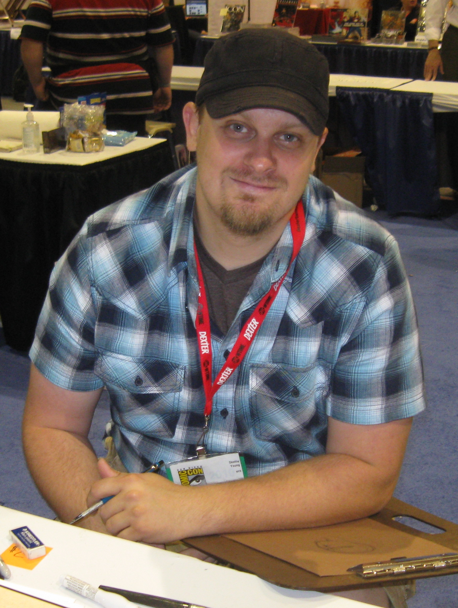
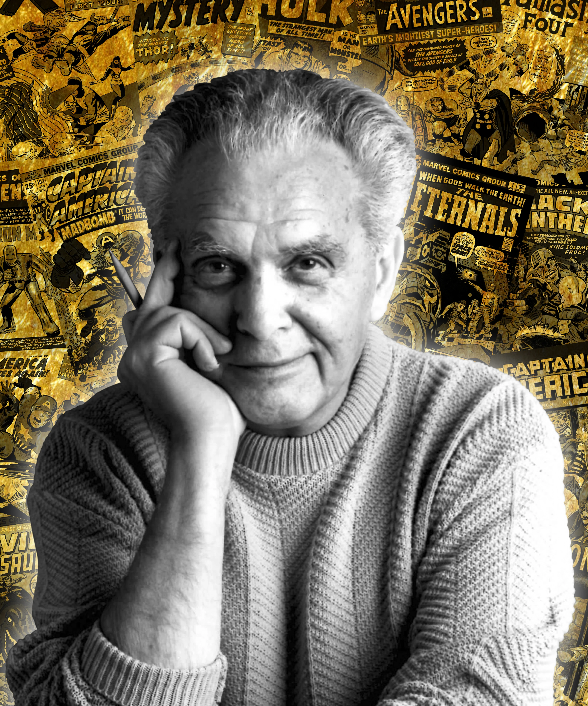
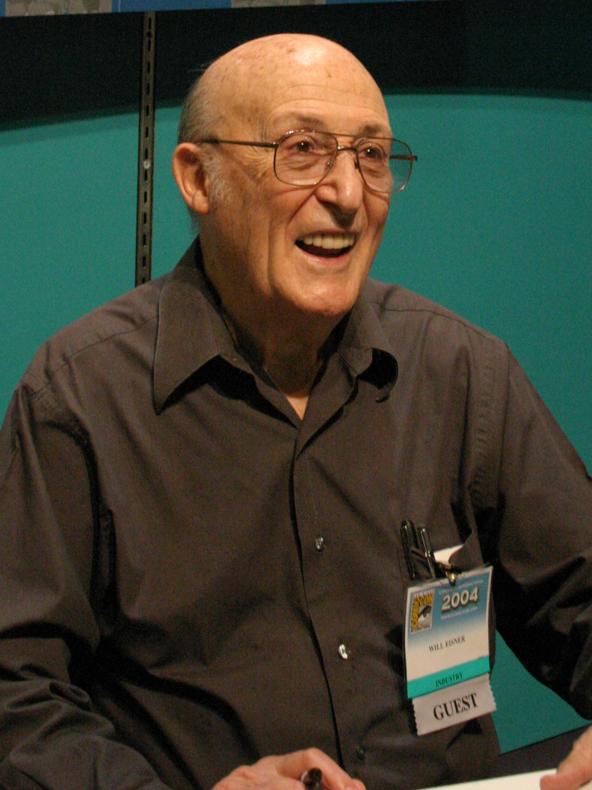
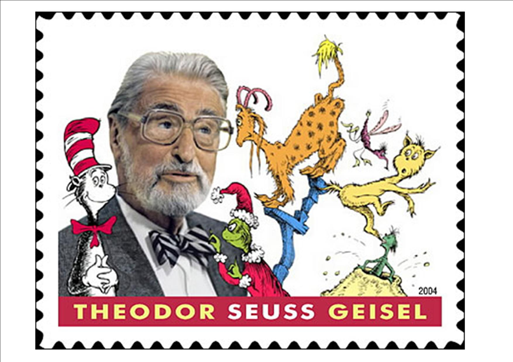

Bob Ross fue un pintor y presentador de televisión que influyó en la cultura popular y en el mundo del arte. Su programa El placer de pintar (The Joy of Painting) en PBS lo convirtió en uno de los pintores más famosos de Estados Unidos.

Alex Ross es un dibujante de historietas y ilustrador estadounidense reconocido por su hiperrealismo y por haber revitalizado a los superhéroes clásicos.
Bryan Lee O'Malley es un autor e ilustrador canadiense de cómics que se hizo famoso por su serie Scott Pilgrim. Su trabajo ha sido reconocido con varios premios y ha sido adaptado al cine y al videojuego.
Frank Miller
.
Bansky
.
Leonardo Da Vinci
.
Frank Miller es un dibujante, guionista y cineasta estadounidense que ha sido muy importante para el mundo del cómic. Su trabajo ha influenciado en el cine y en otros cómics actuales.
Banksy es un artista urbano británico que ha tenido una gran influencia en el arte contemporáneo. Su trabajo ha desafiado las normas sociales y políticas, y ha invitado a la reflexión sobre temas importantes.
Leonardo da Vinci fue un artista, científico, arquitecto e ingeniero italiano del Renacimiento. Su importancia radica en sus aportes a la ciencia, al arte y al humanismo.
Frank Shepard
.
Junji Ito
.
JRJR
Frank Shepard Fairey, OBEY, es un artista urbano y diseñador gráfico estadounidense, famoso por el icónico cartel con la leyenda "Hope" utilizado por Barack Obama durante su campaña presidencial. Sus diseños toman elementos del cartelismo de propaganda política de mediados del siglo XX.

Junji Ito es un autor de manga japonés que ha influido en la percepción global del terror. Su obra ha trascendido fronteras culturales y lingüísticas, y ha inspirado a muchos creadores internacionales.

John Salvatore Romita, Jr. es un historietista estadounidense, conocido por su amplio trabajo para Marvel Comics desde la década de 1970 hasta la década de 2000. Comúnmente se le conoce por las iniciales JRJR.
David "El Dee" Espinoza
.
Skottie Young
.
Jack Kirby
conocido como “El Dee”, es un ilustrador e historietista mexicano creador del cómic Yo y La Muerte, El Twit Ilustrado y Nido de Serpientes, proyecto ganador del premio Novela Gráfica Joven 2018 de Tierra Adentro.

Skottie Young es una dibujante de cómics, ilustrador de libros para niños y escritora estadounidense. Es mejor conocido por su trabajo con varios personajes de Marvel Comics, sus adaptaciones de cómics de los libros Oz

Jacob Kurtzberg, más conocido como Jack Kirby, fue un dibujante, escritor y editor de cómics estadounidense, ampliamente considerado uno de los principales innovadores del medio y uno de sus creadores más prolíficos e influyentes.
Will Eisner
.
Joe Schuster
.
Dr. Seuss

William Erwin Eisner fue un influyente historietista estadounidense, creador del personaje The Spirit en 1941 y popularizador del concepto de novela gráfica a partir de 1978.
Joseph "Joe" Shuster fue un dibujante de cómics estadounidense nacido en Canadá, creador, junto con Jerry Siegel, del célebre personaje de la editorial DC Comics Superman, aparecido en el primer número de la revista Action Comics en marzo de 1938.

Theodor Seuss Geisel fue un escritor y caricaturista estadounidense, conocido por sus libros infantiles escritos bajo su seudónimo, Dr. Seuss. Publicó más de 60 libros para niños, que a menudo se caracterizan por sus personajes imaginativos, rimas y el uso frecuente de trisílabas.